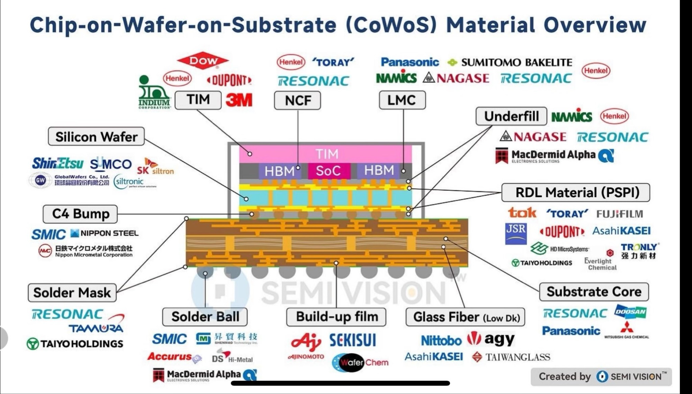
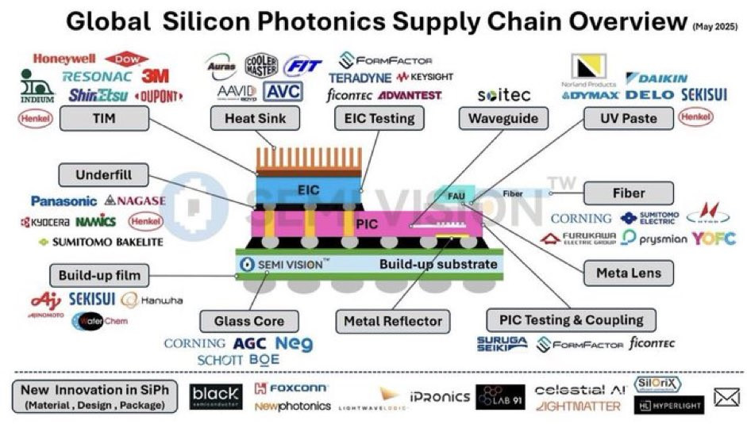
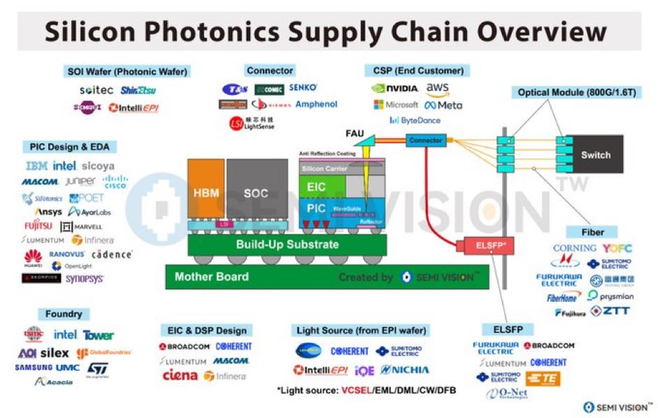

SEMI VISION が公開した3枚のサプライチェーン図に載る企業を1社ずつ同定し、各層の寡占度・直近の供給制約・図の記載が既に古くなっている箇所を突き合わせた。
分析対象の原図をそのまま掲げる。3枚は同じ会社（SEMI VISION）が作った別カットで、切り口が違う。図1は「材料の断面」、図2は「部材ごとの供給者」、図3は「設計から最終顧客までの横の流れ」である。



図1を自前で再構成した。番号は次節の表と対応する。CoWoS は「シリコンかRDLのインターポーザの上にダイを並べ、それを有機基板に載せる」構造で、材料はインターポーザ側と基板側でまったく別の産業に属する。
図1は断面を1枚で描いているが、TSMC の CoWoS には3系統あり、インターポーザの作り方が違う。図1の6層目（RDL材料）が効くのは -R と -L であって、-S ではシリコンインターポーザとTSVが主役になる。
| 系統 | インターポーザ | 特徴 | 状況 |
|---|---|---|---|
| CoWoS-S | シリコン1枚＋TSV | 電気特性は最良。ただし面積を広げると歩留まりが落ちる | 従来の主力1 |
| CoWoS-R | 有機RDL（ポリマー＋銅配線） | 柔軟なため熱膨張差の応力を吸収する。帯域は-Sに劣る | 2023年から量産1,38 |
| CoWoS-L | RDL＋局所シリコン橋（LSI） | 小さなシリコン橋を有機インターポーザに埋めて繋ぐ。実効3,000mm²超まで拡張できる | 3.5倍レチクル品が2024年から量産38 |
| # | 層 | 何をしている層か | 図1に載る供給者 | 寡占の程度 |
|---|---|---|---|---|
| 1 | Silicon Wafer | ダイとシリコンインターポーザの母材。CoWoS-S では TSV を通す土台そのもの | JP信越化学、SUMCO／TWGlobalWafers（環球晶圓）／KRSK Siltron／DESiltronic | 上位5社で約72.6％。300mm に限ると上位5社で約80.1％17 |
| 2 | TIM | ダイの熱を蓋・水冷板へ逃がす。AI アクセラレータの TDP 上昇で樹脂系から金属系へ移行中 | USDow、Qnity（旧DuPont）、Indium Corporation、3M／DEHenkel | 金属TIMは Indium が純インジウム 86W/mK を訴求。液体金属は InGa／InGaSn 系40 |
| 3 | NCF | HBM の各層を貼りながら絶縁する非導電フィルム。熱圧着（TCB）と組で使う | JPレゾナック、東レ／DEHenkel | 上位3社（レゾナック・Henkel・ナミックス）で約99％16 |
| 4 | LMC | パッケージ全体を液状の樹脂で封じる。反りを抑えつつ大面積化に耐えることが要件 | JPパナソニック、住友ベークライト、ナミックス、ナガセ、レゾナック／DEHenkel | 住友ベークライトが封止材で世界首位。同社推定で世界シェア40％13 |
| 5 | Underfill | バンプの周囲を埋め、熱膨張差による応力から接合部を守る | JPナミックス、ナガセ、レゾナック／DEHenkel／USMacDermid Alpha | ナミックスが液状封止材で約40％15 |
| 6 | RDL材料（PSPI） | インターポーザの再配線層の絶縁膜。感光性ポリイミドを露光して微細配線の型を作る | JPTOK、東レ、富士フイルム、JSR、旭化成、HDマイクロシステムズ、太陽ホールディングス／USQnity（旧DuPont）／TW永光化學／CN強力新材 | 日米企業の寡占。中国の国産化率は10％未満22 |
| 7 | C4 Bump | インターポーザと有機基板をつなぐバンプ。マイクロバンプより一桁大きい | JP千住金属工業（SMIC）、日本製鉄、日鉄マイクロメタル | 日鉄マイクロメタルは銅ボンディングワイヤで世界首位18 |
| 8 | Solder Mask | 基板表面のうち、はんだを乗せたくない場所を覆う絶縁膜 | JPレゾナック、タムラ製作所、太陽ホールディングス | レゾナックが大型パッケージ基板向けで世界首位8 |
| 9 | Solder Ball | 基板とマザーボードをつなぐ BGA 球。真球度と径のばらつきが歩留まりを決める | JP千住金属工業（SMIC）／TW昇貿科技、Accurus／KRDS Hi-Metal／USMacDermid Alpha | 千住金属工業がはんだで世界トップ級19 |
| 10 | Build-up film | 基板の層間絶縁膜。この膜を積んで配線層を増やす（＝ビルドアップ） | JP味の素、積水化学／TW晶化科技（WaferChem） | 味の素が95％超。基板コスト全体の約30％が材料費4,5 |
| 11 | Glass Fiber（Low Dk） | 基板コアの骨格になるガラス布。低熱膨張（低CTE）と低誘電が同時に要る | JP日東紡、旭化成／USAGY／TW台灣玻璃 | 日東紡が低CTEガラスクロスで約9割、低誘電で8割超6 |
| 12 | Substrate Core | 基板の芯材。銅張積層板（CCL）としてガラス布に樹脂を含浸させ銅箔を貼る | JPレゾナック、パナソニック、三菱ガス化学／KRDoosan | レゾナックがパッケージ向けCCLで世界首位。三菱ガス化学がBT樹脂でトップ8,14 |
図1に出るロゴを重複を除いて数えると40社。国籍別に分けると、CoWoS の材料層がどれだけ日本に寄っているかが数字で出る。以下は本稿での数え上げによる。
寡占度が高い層は多いが、2026年に価格と納期が動いているのはそのうち一部である。高いシェアと供給の逼迫は別の話なので分けて見る。
| 層 | 企業 | 2026年に起きたこと |
|---|---|---|
| ガラスクロス | 日東紡 | Tガラス価格が20〜30％上昇。銅張積層板の納期は通常8〜10週から20週超へ。福島工場の3倍能力化による供給は2027年央予定6 |
| 基板コア（CCL） | レゾナック | 2026年3月1日出荷分から銅張積層板・プリプレグを全品30％値上げ。理由は銅箔とガラスクロスの需給逼迫10 |
| 基板コア（CCL） | パナソニック | 2026年5月1日出荷分から電子回路基板材料の価格改定。中国に約5万m²の新工場を設置11,12 |
| 基板コア（CCL） | Doosan | 증평工場の稼働率が第2四半期平均109.8％、김천102.7％。NVIDIA に加え AWS・Google と供給協議34 |
| ビルドアップフィルム | 味の素 | 中国本土向け供給を30％削減5 |
| BT樹脂 | 三菱ガス化学 | タイ工場の BT 材増設が完了、能力を倍増14 |
図2には「May 2025」と明記があり、図1と図3には日付がない。実際に企業名を1社ずつ当たると、少なくとも4箇所は現在の資本関係と食い違っている。図を引用するならここは直さないと通らない。
図1が電気のパッケージなら、図2と図3はそこに光の入口をつける話である。銅配線の消費電力が壁になったので、電気→光の変換をスイッチ ASIC や GPU の直近まで持ち込む。これが CPO（co-packaged optics）である。
図2・図3に出てくる ELSFP（External Laser Small Form-Factor Pluggable）は、OIF が策定した実装合意である25。CW レーザーを光エンジンの外に出し、筐体のフロントパネルに差す形にする。理由は3つある。
| 狙い | 中身 |
|---|---|
| 熱 | フロントパネルは筐体内で最も温度が低い。レーザーは温度に弱いので、ここに置くと信頼性が上がる26 |
| 共有 | 1台の高出力レーザーを複数の SiPh 光エンジンで分け合える。エンジンごとにレーザーを内蔵しなくてよい25 |
| 保守 | 故障率の高い部品をホットスワップできる。CPO スイッチを止めずにレーザーだけ交換できる26 |
図3の ELSFP 欄には古河電工・Broadcom・Lumentum・Coherent・住友電工・TE・O-Net Technologies の7社が並ぶ。CPO 時代に日本の電線・光デバイス勢が残る位置は、スイッチ本体そのものではなく外付けレーザーとコネクタである。
COUPE（Compact Universal Photonic Engine）は SoIC-X で電気ダイを光ダイの上に積む方式で、ダイ間インターフェースのインピーダンスを下げる27。
NVIDIA 側では Quantum-X（InfiniBand）と Spectrum-X Photonics（Ethernet）が対応する製品で、Spectrum-X は2026年下期に提供予定。構成は128ポート×800Gb/s から2,048ポート×200Gb/s までで、総帯域400Tb/s に達する28,29。光エンジンは TSMC の COUPE で作られ、200Gb/s の MRM に220百万トランジスタと1,000の PIC を積む構成である29。
図1の12層目（Substrate Core）と図2の Glass Core は、同じ場所を有機材料とガラスのどちらで作るかという競合関係にある。図2に Corning・AGC・NEG・SCHOTT・BOE が載っているのは、この置き換えを見込んでいるからである。
図1の各層に台湾・中国企業が1〜2社ずつ混ざっているのは偶然ではない。日本勢の寡占が政治的な供給制約に直結すると分かった時点で、輸入代替の動きが始まっている。ただし進捗は層ごとに大きく違う。
| 層 | 挑戦者 | 現状 | 相手 |
|---|---|---|---|
| ビルドアップフィルム | TW晶化科技（WaferChem、2015年創業） | Taiwan Build-Up Film（TBF）を自主開発。台湾で ABF 膜材に投資している唯一の企業。日本製の各型番に対応する競合品を複数開発し、国内外の複数社で検証を通過20 | 味の素（95％超） |
| RDL材料（PSPI） | CN強力新材（Tronly、300429） | 高温 PSPI が商社経由で百kg級の受注。第1期259t/年が検証通過、計画総能力395.2t/年。ただし納入は未完了で顧客検証中21。中国の国産化率は10％未満22 | 東レ・旭化成・HDマイクロシステムズ |
| ガラスクロス | JP旭化成 | 1.6Tbps 対応の石英ガラスクロス。2025年に顧客評価を開始、2026年度の認定取得を目標。シリカ含有率99.9％を掲げて正面から挑む35 | 日東紡（約90％） |
| ガラスクロス | TW台灣玻璃 ／ CN泰山ガラス繊維 | 低CTE ガラスクロスの製造技術と能力を持つのは世界で日東紡を含む3社という集計がある。台湾ガラスは NVIDIA 向け供給で日東紡を追走していると台湾側で報じられた42 | 日東紡 |
| SOI ウェハ | CN上海新傲（Simgui） | 2014年に Soitec から200mm 限定でライセンス。Simgui が製造し販売は Soitec が握る形。2026年3月13日に NSIG と10年延長で合意したが、新規の技術移転はない23,24 | Soitec |
日東紡が増産しないのは需要が読めないからではない。1,600〜1,700℃の電気溶融炉は建設と立ち上げに数年かかり、福島工場の3倍能力化でも供給は2027年央になる6。同じことがガラスコアにも当てはまる。Corning・SCHOTT・AGC の90％超は特許ではなく、ガラスを溶かして所定の組成と平坦度に持っていく実装知に支えられている31。この種の寡占は資金では短縮できない。
図1の同じ行に並ぶ企業が、同じ市況を同じように享受しているわけではない。レゾナックは2026年12月期上期の営業利益が前年同期比156.5％増（コア営業利益は2.6倍の888億円）、後工程材料は46％増収で、銅張積層板を全品30％値上げした9,10。パナソニックも追随して価格改定した11。一方で日東紡は同じ逼迫の中で2026年5月に純利益見通しを前期比59％減と発表して株価が一時12％超下落している6。シェアの高さは値上げを通す力を保証しない。供給先の集中度、置き換えコスト、そして自社の利益構造の集中度で結果は分かれる。
図1の材料企業は、味の素も日東紡も千住金属工業も、10年前の同じ図に載っていたはずの顔ぶれである。対して図2の「New Innovation in SiPh」枠は、May 2025 から1年強で Celestial AI が Marvell に買われて枠から消えた30。同じ SEMI VISION の図でも、材料側は構造図として長く使えるが、光の側は撮った時点の記録にすぎない。図を引用するときは、どちらの層を引いているのかで扱いを分ける。
TSMC の CoWoS 能力は2025年の月産約7万枚から2026年末に13万〜14万枚へ拡大し、OSAT の追加5〜6万枚を含めると業界計で月産20万枚に近づく見込みである。需給ギャップは20％から10％へ縮小するとされる2,3。一方で銅張積層板の納期は8〜10週から20週超に伸び6、ABF は中国向けが30％削られた5。パッケージの箱は増えるが、箱を作る材料の増設は炉と認定に律速される。ボトルネックは前工程から後工程へ、そして後工程から材料へ順に降りていく。
本文中で点線が引かれた語は、カーソルを重ねる（スマートフォンではタップする）と同じ説明が出る。略称は正式名称を併記した。全90件。本文には出ず図の中だけに現れる語（SoC・CSP・導波路・YOFC・ZTT・IQE）も、図を読むときに要るのでここに入れてある。
CoWoS の断面と基板材料まわりの用語。45件。
| 語 | 正式名称 | 意味 |
|---|---|---|
| CoWoS | Chip-on-Wafer-on-Substrate チップ・オン・ウェハ・オン・サブストレート | TSMC の 2.5D 実装技術。ダイをインターポーザ上に並べ（Chip-on-Wafer）、それを有機基板に載せる（on-Substrate）。AI アクセラレータの標準的な組み方。 |
| CoWoS-S | CoWoS with Silicon interposer シリコンインターポーザ版 | インターポーザがシリコン1枚で、TSV で縦に配線する。電気特性は最良だが、面積を広げると歩留まりが落ちる。 |
| CoWoS-R | CoWoS with RDL interposer 有機RDLインターポーザ版 | インターポーザが有機の再配線層。柔らかいので熱膨張差の応力を吸収する。帯域は -S に劣る。2023年から量産。 |
| CoWoS-L | CoWoS with Local Silicon Interconnect 局所シリコン橋版 | 有機インターポーザに小片のシリコン橋（LSI）を埋めて繋ぐ。実効 3,000mm² 超まで広げられる。 |
| TSV | Through-Silicon Via シリコン貫通ビア | シリコンを縦に貫通させた配線孔。ダイやインターポーザの表と裏を最短で繋ぐ。 |
| TGV | Through-Glass Via ガラス貫通ビア | ガラス基板を縦に貫通させた配線孔。ガラスは割れやすいので、深さと径の比を上げるほど加工が難しい。 |
| LSI | Local Silicon Interconnect 局所シリコン配線 | CoWoS-L で有機インターポーザに埋め込む小片のシリコン配線橋。一般に使う LSI（Large Scale Integration＝大規模集積回路）とは別語なので混同しやすい。 |
| RDL | Redistribution Layer 再配線層 | ダイの電極を別の位置に引き直す配線層。ポリマーの絶縁膜と銅配線を交互に積んで作る。 |
| PSPI | Photosensitive Polyimide 感光性ポリイミド | 露光するだけでパターンを作れるポリイミド。RDL の層間絶縁膜に使う。エッチング工程を省ける。 |
| TIM | Thermal Interface Material 熱伝導材料 | ダイと蓋や水冷板の隙間を埋めて熱を逃がす材料。発熱が上がるほど樹脂系から金属系・液体金属へ移る。 |
| NCF | Non-Conductive Film 非導電性フィルム | HBM の各層を貼り合わせながら絶縁するフィルム。熱圧着（TCB）と組で使う。 |
| LMC | Liquid Molding Compound 液状封止材 | 液状で塗ってから固める封止樹脂。粉体を金型で成形する方式より反りを抑えやすく、大型パッケージ向き。 |
| MR-MUF | Mass Reflow - Molded UnderFill 一括リフロー＋モールドアンダーフィル | ダイを積んで一括で溶着し、隙間を樹脂で同時に埋める HBM の積層方式。TCB より速い。SK hynix が採用。 |
| TCB | Thermal Compression Bonding 熱圧着接合 | 熱と圧力をかけてダイを1個ずつ接合する方式。位置精度は高いが1個ずつなので遅い。 |
| C4 | Controlled Collapse Chip Connection 制御崩壊型チップ接続 | ダイの裏面に並べたはんだバンプを溶かして基板と繋ぐ方式。IBM 由来の呼び名。 |
| BGA | Ball Grid Array ボールグリッドアレイ | パッケージの裏面にはんだ球を格子状に並べた実装形式。ピン数を稼げる。 |
| ABF | Ajinomoto Build-up Film 味の素ビルドアップフィルム | 味の素ファインテクノが作る基板の層間絶縁フィルム。事実上の業界標準で、製品名がそのまま基板の分類名になっている。 |
| CCL | Copper Clad Laminate 銅張積層板 | ガラス布に樹脂を含浸させ、銅箔を貼った基板の素材。基板の芯になる。 |
| BT | Bismaleimide Triazine ビスマレイミド・トリアジン樹脂 | 耐熱性と絶縁性が高い樹脂。半導体パッケージ基板の芯材に使う。 |
| CTE | Coefficient of Thermal Expansion 熱膨張係数 | 温度が1度上がったときに材料が伸びる割合。値の違う材料を貼り合わせると、温度変化で反りや剥離が起きる。 |
| Dk | Dielectric constant 比誘電率 | 電気を溜め込みやすさの指標。低いほど信号が速く伝わり、損失が減る。高速通信ほど低 Dk 材料が要る。 |
| HBM | High Bandwidth Memory 広帯域メモリ | DRAM を縦に積んで TSV で繋ぎ、帯域を稼いだメモリ。AI アクセラレータの隣に置く。 |
| SoC | System on Chip システム・オン・チップ | 演算コアや周辺機能を1個のチップに集めた集積回路。CoWoS では中央に置かれる本体ダイ。 |
| ASIC | Application Specific Integrated Circuit 特定用途向け集積回路 | 用途を絞って設計した専用チップ。汎用品より速く省電力にできる。 |
| OSAT | Outsourced Semiconductor Assembly and Test 後工程受託企業 | 組立と検査だけを請け負う専業企業。ファウンドリが持ちきれない実装能力を補う。 |
| TDP | Thermal Design Power 熱設計電力 | 設計上想定する最大発熱。冷却系はこの値に合わせて作る。 |
| レチクル | reticle | 露光機が一度に焼ける最大の面積。この上限がダイやインターポーザの寸法を縛る。CoWoS-L はこれを超えるための技術。 |
| インターポーザ | interposer | ダイと基板の間に挟んで配線を中継する板。ダイ同士を細い配線で直結するために置く。 |
| マイクロバンプ | micro bump | ダイとインターポーザを繋ぐ数十マイクロメートル径の微小な突起。C4 バンプより一桁小さい。 |
| バンプ | bump | ダイの電極に作るはんだや銅の突起。これを潰して上下を接合する。 |
| Underfill | underfill アンダーフィル | バンプの隙間に流し込む樹脂。熱膨張差で生じる応力から接合部を守る。 |
| Solder Mask | solder resist / solder mask ソルダーレジスト、ソルダーマスク | 基板表面のうち、はんだを乗せたくない場所を覆う絶縁膜。ソルダーマスクとも呼ぶ。 |
| ビルドアップ | build-up | 絶縁膜と配線層を1層ずつ積み増して多層基板を作る工法。積む枚数で層数が決まる。 |
| プリプレグ | prepreg | 樹脂を含浸させて半硬化させたガラス布。重ねて熱と圧力をかけると固まって基板になる。 |
| ガラスクロス | glass cloth | ガラス繊維を織った布。樹脂を含ませて基板の骨格にする。織り方と組成で誘電率と熱膨張が決まる。 |
| 銅張積層板 | Copper Clad Laminate（CCL） | ガラス布に樹脂を含浸させ銅箔を貼った基板素材。ここに回路を刻む。 |
| 反り | warpage | 温度変化で基板やパッケージが曲がる現象。面積が大きいほど悪化し、接合不良の原因になる。 |
| 歩留まり | yield | 投入した枚数に対する良品の比率。面積を広げるほど下がる。 |
| 前工程 | front-end of line | ウェハの上に回路を作り込むまでの工程。露光や成膜が中心。 |
| 後工程 | back-end of line | ウェハを切り出してパッケージに組み、検査するまでの工程。CoWoS はここに属する。 |
| ファウンドリ | foundry | 他社が設計したチップを受託製造する会社。TSMC が最大手。 |
| パネルレベルパッケージ | Panel Level Packaging（PLP） | 円形ウェハではなく角形パネル単位で実装する方式。取り都合はよいが反りが出やすい。 |
| アスペクト比 | aspect ratio | 穴の深さと直径の比。値が大きいほど深く細い穴で、加工が難しくなる。 |
| 真球度 | sphericity | はんだ球がどれだけ真円の球に近いか。ばらつくとはんだ量が揃わず接合が不安定になる。 |
| ダイ | die | ウェハから切り出した1個分のチップ。パッケージに入る前の裸の状態を指す。 |
シリコンフォトニクスと光モジュールまわりの用語。27件。
| 語 | 正式名称 | 意味 |
|---|---|---|
| CPO | Co-Packaged Optics コパッケージド・オプティクス | 光エンジンをスイッチ ASIC や GPU と同じパッケージに載せる実装。電気配線を短くして消費電力を下げる。 |
| SiPh | Silicon Photonics シリコンフォトニクス | シリコンの上に導波路や変調器を作り、光を半導体の製造工程で扱う技術。既存のCMOS設備を流用できる。 |
| PIC | Photonic Integrated Circuit 光集積回路 | 導波路・変調器・受光素子を1チップに集積した光の回路。 |
| EIC | Electronic Integrated Circuit 電子集積回路 | PIC を駆動し、受けた信号を処理する電気側のチップ。PIC と積むか並べるかが実装の分かれ目。 |
| SOI | Silicon On Insulator 絶縁膜上シリコン | 絶縁層の上に薄いシリコン層を載せたウェハ。屈折率差で光を閉じ込められるので導波路の母材になる。 |
| COUPE | Compact Universal Photonic Engine コンパクト・ユニバーサル・フォトニック・エンジン | TSMC のシリコンフォトニクス実装。SoIC-X で電気ダイを光ダイの上に直接積み、界面の抵抗を下げる。 |
| SoIC-X | System on Integrated Chips - bumpless variant TSMCの3D積層技術（バンプレス版） | ダイ同士をバンプなしで直接接合する積層方式。接合面の抵抗と厚みを減らせる。COUPE はこれで電気ダイを光ダイの上に積む。 |
| ELSFP | External Laser Small Form-Factor Pluggable 外付けレーザー小型着脱モジュール | CW レーザーを光エンジンの外に出し、筐体の前面パネルに差せるようにした OIF の規格。冷えた場所に置け、共有でき、故障時に交換できる。 |
| OIF | Optical Internetworking Forum 光インターネットワーキング・フォーラム | 光インターコネクトの相互接続仕様を決める業界団体。ELSFP の実装合意もここが出した。 |
| OSFP | Octal Small Form-Factor Pluggable 8レーン小型着脱モジュール | 8レーン構成の光トランシーバ規格。800Gbps 以上の主流の形。 |
| CW | Continuous Wave 連続発振 | 変調をかけず一定の出力で光り続けるレーザー。外部の変調器と組んで信号を乗せる。 |
| VCSEL | Vertical-Cavity Surface-Emitting Laser 垂直共振器面発光レーザー | チップの表面から垂直に光を出すレーザー。安く大量に作れるが、届く距離は短い。 |
| EML | Electro-absorption Modulated Laser 電界吸収型変調器集積レーザー | レーザーと変調器を1チップに載せたもの。長距離・高速に向く。 |
| DML | Directly Modulated Laser 直接変調レーザー | 駆動電流を上下させて光を直接点滅させる方式。構成は簡単だが高速化に限界がある。 |
| DFB | Distributed FeedBack laser 分布帰還型レーザー | 共振器に回折格子を作り込み、波長を1本に絞ったレーザー。 |
| MRM | Micro-Ring Modulator 微小リング変調器 | リング状の共振器で光を変調する素子。面積と消費電力が小さい。 |
| 導波路 | waveguide | 光を閉じ込めて運ぶ通り道。シリコンフォトニクスではシリコンの細い線として作る。 |
| ホットスワップ | hot swap | 電源を入れたまま部品を差し替えること。止められない装置ほど価値が出る。 |
| エピウェハ | epitaxial wafer | 基板結晶の上に薄膜結晶を成長させたウェハ。レーザーなど化合物半導体の材料になる。 |
| EDA | Electronic Design Automation 電子設計自動化 | 回路の設計と検証を行うソフトウェア。Cadence と Synopsys の2社が大きい。 |
| CSP | Cloud Service Provider クラウド事業者 | クラウドを提供する事業者。図3では最終顧客を指す。半導体で同じ綴りが指す Chip Scale Package とは別語。 |
| Smart Cut | Smart Cut | Soitec の貼り合わせ剥離技術。水素イオンを打ち込んだ薄い層を別のウェハへ転写して SOI を作る。 |
| Photonic Fabric | Photonic Fabric | Celestial AI が開発した光インターコネクト技術。高熱のプロセッサと同じ3Dパッケージに同居できるのが売り。現在は Marvell の製品ライン。 |
| Quantum-X | NVIDIA Quantum-X Photonics | NVIDIA の InfiniBand 向け CPO スイッチ。 |
| Spectrum-X | NVIDIA Spectrum-X Photonics | NVIDIA の Ethernet 向け CPO スイッチ。2026年下期提供予定。 |
| InfiniBand | InfiniBand | HPC と AI クラスタで使う高速インターコネクト規格。Ethernet より遅延が小さい。 |
| pJ/bit | picojoule per bit ビットあたりピコジュール | 1ビット送るのに要するエネルギー。CPO の価値はここを下げられる点にある。 |
本文に略称で出る企業・技術ブランド。18件。
| 語 | 正式名称 | 意味 |
|---|---|---|
| SMIC | Senju Metal Industry Co., Ltd. 千住金属工業 | 1938年創業の日本のはんだメーカー。図1ではこのブランドロゴが C4 バンプ欄とソルダーボール欄に出る。中国のファウンドリ SMIC（Semiconductor Manufacturing International Corporation＝中芯国際）とは無関係。 |
| TSMC | Taiwan Semiconductor Manufacturing Company 台湾積体電路製造 | 世界最大のファウンドリ。CoWoS も COUPE もこの会社の技術ブランド。 |
| SUMCO | SUMCO Corporation サムコ株式会社 | シリコンウェハ大手。旧社名は住友三菱シリコン。信越化学と並ぶ2強。 |
| TOK | Tokyo Ohka Kogyo Co., Ltd. 東京応化工業 | フォトレジスト大手。PSPI でも主要供給者。 |
| JSR | JSR Corporation JSR株式会社 | 旧・日本合成ゴム。半導体材料の大手。 |
| AGC | AGC Inc. AGC株式会社 | 旧・旭硝子。ガラス大手で、ガラスコア基板の TGV 加工を開発中。 |
| NEG | Nippon Electric Glass Co., Ltd. 日本電気硝子 | ガラス大手。TGV 加工済みの大判ガラス基板をサンプル提供している。 |
| UMC | United Microelectronics Corporation 聯華電子 | 台湾のファウンドリ。シリコンフォトニクスの受託も手がける。 |
| AOI | Applied Optoelectronics, Inc. アプライド・オプトエレクトロニクス | 米国の光デバイス企業。図3ではファウンドリ欄に入っている。 |
| YOFC | Yangtze Optical Fibre and Cable 長飛光繊光纜 | 中国の光ファイバ大手。 |
| ZTT | Zhongtian Technology 中天科技 | 中国の光ファイバ・ケーブル大手。 |
| BOE | BOE Technology Group 京東方科技集団 | 中国のディスプレイ最大手。ガラス基板を次の柱に据えている。 |
| IQE | IQE plc アイキューイー | 英国の化合物半導体エピウェハ専業。レーザー用のエピ材を供給する。 |
| AWS | Amazon Web Services アマゾン・ウェブ・サービス | アマゾンのクラウド事業。自社設計チップの実装能力を確保する側に回っている。 |
| TBF | Taiwan Build-Up Film 台湾製ビルドアップフィルム | 晶化科技が ABF の代替として開発したビルドアップフィルム。日本製の型番に対応する競合品を揃えている。 |
| NSIG | National Silicon Industry Group 上海硅産業集団 | 上海新傲（Simgui）を傘下に持つ中国の半導体材料グループ。Soitec とライセンス契約を結んでいる。 |
| ST | STMicroelectronics STマイクロエレクトロニクス | スイスに本社を置く仏伊系の半導体大手。シリコンフォトニクスの受託製造もする。 |
| VisEra | VisEra Technologies 采鈺科技 | TSMC 系の光学部品・イメージセンサ受託企業。ガラス基板のパイロットラインを担う。 |
図1〜3の原図は SEMI VISION 作成。以下は本文中の数値・事実の出典。市場調査会社の推計値は範囲が大きく開くものがあるため、本文では出典元を併記した。